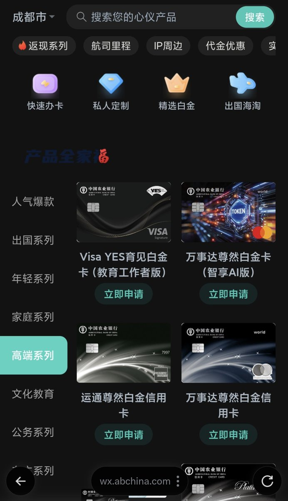

奶昔🥤
@realNyarime
搞了一张老农的Visa Yes育见白金卡，是单币种Visa，有效期内免年费
有个全年境外机场贵宾厅 就没啥权益了
开卡链接见引用帖

浪险 | 出海基建·港美卡·云居民
@sino_go_global
很多朋友在问是不是要教师才能申请，其实不用的😆
前面着急发太快，补一下产品介绍，供参考：
1、农行大白金级别信用卡
2、相当于联名款 Visa 白金，跟之前标准版尊享 Visa 白一样，都免年费
3、尤其适合海外使用，免费享受农行境外贵宾厅
4、农行还有蛮给力的境外支付活动，Apple Pay 返现 2%、笔笔 https://t.co/3jmCROZ3TZ https://t.co/qjOiGfTSOH